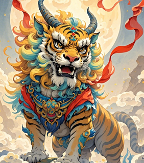
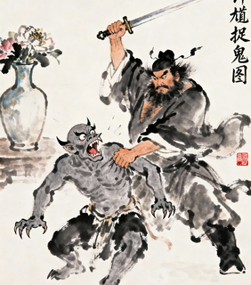

📜 每日国学名句
岁寒，然后知松柏之后凋也。
——《论语》
民俗小词条
上古先民以农耕为本，所有岁时节日都源于祭祀天地、祈求丰收，一代代慢慢演变为如今的团圆民俗。
写作小提示
写传统文化课题时，可以从技艺起源、民俗演变、当代传承三个层次分段，内容条理更清晰。
国风趣味故事 & 文化冷知识
短小精炼的神话传说、颠覆常识的历史冷知识，文案轻松年轻化，非常适合课堂分享、手抄报制作与朋友圈科普。
🌕 嫦娥奔月
后羿向西王母求得一包长生不死仙药，交由妻子嫦娥妥善保管。心怀歹意的弟子逢蒙趁后羿外出打猎，持剑闯入家中抢夺灵药。为了不让仙药落入恶人之手，嫦娥果断吞下整包灵药，身体不由自主向着月宫飞升。从此嫦娥独居清冷广寒宫，日夜遥望人间故土，这个凄美的神话也成为中秋文化的核心传说。
作业素材｜手抄报内容
🧧 年兽传说
远古深山里住着一头凶兽名叫“年”，每到除夕夜晚就闯入村庄抢夺牲畜、惊扰百姓。村民长期深受其害，后来偶然发现，年兽极度惧怕红色的事物、火光与巨大的爆竹声响。于是每到岁末，家家户户张贴红联、燃放爆竹、通宵点灯守岁，驱赶凶兽，辞旧迎新，这套习俗一直延续至今，成为过年最热闹的仪式。
民俗科普｜课堂小故事
👻 钟馗捉鬼
钟馗相貌刚猛、才华出众，在唐朝科举考试中一举高中状元。可皇帝嫌弃他长相丑陋，直接取消了他的功名。悲愤不已的钟馗当场撞柱而亡。玉帝欣赏他刚正不屈的品性，册封他为捉鬼天师，镇守人间邪魔。后世百姓都会张贴钟馗画像用来驱邪保平安，成为流传千年的民俗信仰。
国风美术素材传统文化冷知识
🤔 端午节最早并不是纪念屈原？
端午最早是上古先民的祭龙大典，用来祭祀龙神，祈求汛期平安。纪念屈原、伍子胥都是后世慢慢叠加形成的人文故事，属于文化不断融合演变的结果。
🥮 月饼原本是军用干粮？
月饼起源于唐代军营，饼身圆而厚实，方便随军储存、长途携带。后来慢慢流入民间，被赋予团圆寓意，从军粮一步步变成中秋标志性节日点心。
🏮 元宵节是古代的情人节
古代女子平日足不出户，唯有元宵灯会可以出门夜游赏灯。无数青年男女在灯会上相遇相识，元宵节才是古人最浪漫的社交节日。
🐉 龙生九子，个个本领不同
龙的九个儿子性格各不相同，分别镇守牢狱、古钟、屋脊、江河，遍布在古建筑各处，是中式祥瑞文化最经典的元素。
🔥 热门词条
本周手工推荐
端午草药香囊DIY，只需要艾草、丁香、棉布，制作简单，非常适合社团集体开展活动。
手抄报文案库
中华文化源远流长，无数非遗技艺代代相传，守护着民族独有的匠心与东方美学。
作品投稿
欢迎上传你的书法、国画、剪纸习作，优秀作品将在互动页面公开展示。